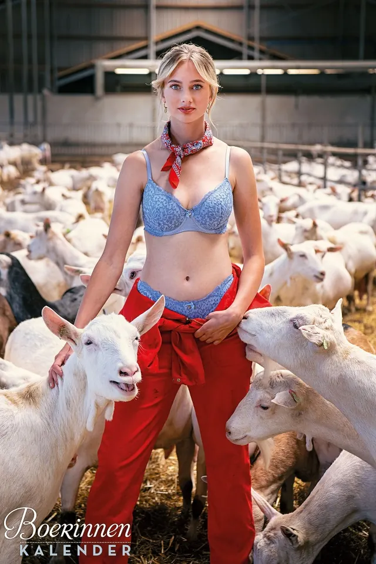
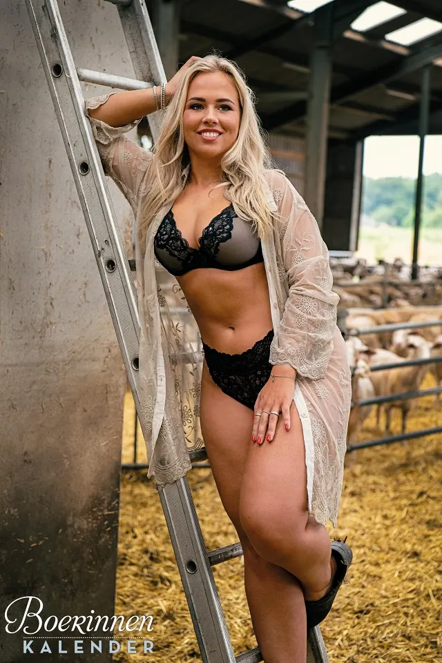
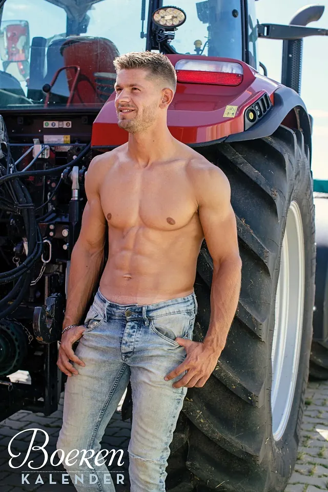

Nieuws ·
Van pittige protesten naar pikante platen

Dit bericht uit ons archief verscheen op 3 oktober 2022 op NieuwsNijmegen.nl. Data, tijden en prijzen kunnen inmiddels anders zijn.
Sexy kalenders in kader van positieve perspectieven
Veelvuldige protesten, verontrustende aantijgingen en oplopende grondstofprijzen. Het lijken de drie meest besproken onderwerpen van 2022 te worden. Zwaar beladen thema’s waar de makers en modellen van de boeren- en boerinnenkalender eind dit jaar graag een ander geluid tegenover zetten. Er is volgens hen een breed gedragen behoefte aan verbinding en positieve perspectieven. Schaars geklede agrariërs met een missie kunnen wellicht voor een luchtig lichtpuntje zorgen.

Constructief communiceren
Deelname aan de pikante kalenders levert voor velen niet alleen mooie jeugdfoto’s op voor later, maar ook een spreekbuis waarop zij hun stem kunnen laten gelden. Dat er op het platteland onvrede heerst, is niemand ontgaan. Via de sexy kalenders hebben boeren en boerinnen echter een meer luchtige manier van communiceren gevonden. “We moeten samen het gesprek aan blijven gaan. Focussen op wat wél kan” vertelt kalendermodel Jan Auke. Bonita wil de aandacht die zij krijgt door deelname aan de kalender vooral gebruiken om mensen aan te sporen direct bij de boer te kopen in plaats van bij de supermarkt: “Steun de voedselmakers en koop lokaal!”.
Toekomstgericht innoveren
De kalendermodellen spreken zich uit tegen het stikstofbeleid, maar het merendeel houdt er ook hier een constructieve benadering op na. “Wanneer er door boeren en overheid meer geïnvesteerd wordt in innovatie, hoeven er helemaal geen boerderijen te verdwijnen” vertelt kalendermodel Fabian bijvoorbeeld. Daarmee refereert hij aan onder andere een biogas-installatie in Hoge Hexel. Daar is vrijwel het gehele dorp van het aardgas af dankzij één vooruitstrevende boer die uit dierlijke mest voldoende groen gas haalt voor 300 woningen. “En zo bestaan er ook al ‘stikstofstrippers’ die de stikstofuitstoot van boerderijen minstens halveert. Volgens berekeningen van WUR loopt de reductie zelfs op tot 70%” vult Fabian aan.

Wars van betutteling
“In Nederland is er weinig aandacht voor dergelijke innovaties die het toekomstperspectief van boeren rooskleuriger maakt” zegt kalendermaker Stef Bloo. Hij merkt op dat er daarentegen wel veel aandacht is voor de ‘woke’ en ‘me-too’ bewegingen. “Het lijkt wel alsof iedereen daardoor op eieren loopt als het over controversiële onderwerpen gaat. Zo ook over onze sexy kalenders”. Hiermee refereert de initiatiefnemer aan een recente vraag van een journalist of zijn jaarlijkse uitgaves nog wel door de beugel konden in tijden van ‘me-too’. “Er komen jaarlijks honderden aanmeldingen binnen van mensen die vrijwillig en vol trots schaars gekleed gefotografeerd willen worden om hun sector te promoten. Dit heeft niets met seksuele intimidatie te maken. Op het platteland zijn mensen gelukkig nog wat meer wars van betutteling”, luidde zijn antwoord. Zo kwam voor de boerinnenkalender van 2023 een recordaantal van 407 inschrijvingen binnen.
Kalenderlancering in kader van verbinding
Uit al deze aanmeldingen zijn 30 agrariërs geselecteerd voor een pikante fotoshoot. Zij worden op 7 oktober aanstaande feestelijk gepresenteerd aan pers en publiek. Dit keer alleen niet in een agrarische soos. In het kader van verbinding brengt de organisatie het platteland naar de stad toe. Bij ‘Club Chicago’ in hartje Deventer kunnen de kalendermodellen alvast wennen aan de spotlights, want op 29 oktober aanstaande zullen ze wederom de catwalk betreden. Dan vindt de ‘Miss Boerin Verkiezing’ plaats bij het festival ‘Høken & Hakselen’ in Loosbroek. De nieuwe kalenders en tickets voor beide events zijn verkrijgbaar via boerendingen.nl.